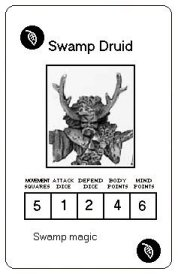

Swamp Druid
by Wilco

Download the Swamp Druid Monster Card (18K)
When the power of darkness grew it also affected the lands. and even though the druids, the protectors of the forests, tried everything they could they failed. The evil turned the mighty forests into dreadful swamps and corrupted the once so good hearthed druids. Now these druids do everything they can for the cause of darkness. With their now corrupted magic they attack innocent people to strike fear in the hearth of mankind. But a swamp druid alone is not a great threat, because of their fragile bodies. So these druids are alwas surrounded by animals. Be it wolfs, night ravens or insects all will try to kill you.
Miniature:
You can use any druid miniature and paint it with dark colors, but I sugest you buy a dark wizard of Ral Partha. They come with 3 wizards (of which 1 is displayed on the card) and you can find them at:
http://store.fasa.com/ralpartha/index.asp?level1=1313&level2=1321